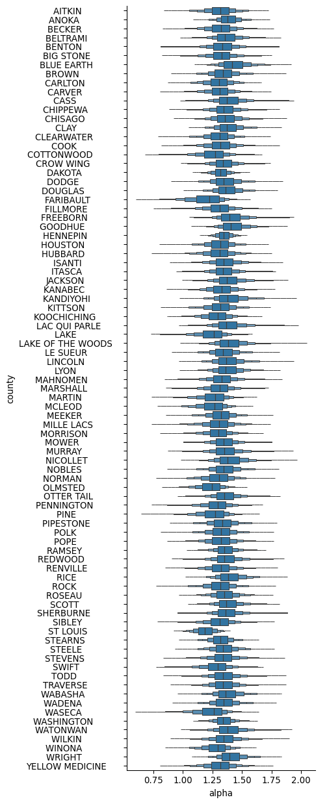

import os
os.environ["TBB_CXX_TYPE"] = "clang" # or 'gcc'Usage with Stan models
This document shows how to use nutpie with Stan models. We will use the nutpie package to define a simple model and sample from it using Stan.
Installation
For Stan, it is more common to use pip or uv to install the necessary packages. However, conda is also an option if you prefer.
To install using pip:
pip install "nutpie[stan]"To install using uv:
uv add "nutpie[stan]"To install using conda:
conda install -c conda-forge nutpieCompiler Toolchain
Stan requires a compiler toolchain to be installed on your system. This is necessary for compiling the Stan models. You can find detailed instructions for setting up the compiler toolchain in the CmdStan Guide.
Additionally, since Stan uses Intel’s Threading Building Blocks (TBB) for parallelism, you might need to set the TBB_CXX_TYPE environment variable to specify the compiler type. Depending on your system, you can set it to either clang or gcc. For example:
Make sure to set this environment variable before compiling your Stan models to ensure proper configuration.
Defining and Sampling a Simple Model
We will define a simple Bayesian model using Stan and sample from it using nutpie.
Model Definition
In your Python script or Jupyter notebook, add the following code:
import nutpie
model_code = """
data {
int<lower=0> N;
vector[N] y;
}
parameters {
real mu;
}
model {
mu ~ normal(0, 1);
y ~ normal(mu, 1);
}
"""
compiled_model = nutpie.compile_stan_model(code=model_code)Sampling
We can now compile the model and sample from it:
compiled_model_with_data = compiled_model.with_data(N=3, y=[1, 2, 3])
trace = nutpie.sample(compiled_model_with_data)Sampler Progress
Total Chains: 6
Active Chains: 0
Finished Chains: 6
Sampling for now
Estimated Time to Completion: now
| Progress | Draws | Divergences | Step Size | Gradients/Draw |
|---|---|---|---|---|
| 1400 | 0 | 1.33 | 3 | |
| 1400 | 0 | 1.39 | 1 | |
| 1400 | 0 | 1.37 | 3 | |
| 1400 | 0 | 1.38 | 1 | |
| 1400 | 0 | 1.35 | 3 | |
| 1400 | 0 | 1.33 | 3 |
Using Dimensions
We’ll use the radon model from this case-study from the stan documentation, to show how we can use coordinates and dimension names to simplify working with trace objects.
We follow the same data preparation as in the case-study:
import pandas as pd
import numpy as np
import arviz as az
import seaborn as sns
home_data = pd.read_csv(
"https://github.com/pymc-devs/pymc-examples/raw/refs/heads/main/examples/data/srrs2.dat",
index_col="idnum",
)
county_data = pd.read_csv(
"https://github.com/pymc-devs/pymc-examples/raw/refs/heads/main/examples/data/cty.dat",
)
radon_data = (
home_data
.rename(columns=dict(cntyfips="ctfips"))
.merge(
(
county_data
.drop_duplicates(['stfips', 'ctfips', 'st', 'cty', 'Uppm'])
.set_index(["ctfips", "stfips"])
),
right_index=True,
left_on=["ctfips", "stfips"],
)
.assign(log_radon=lambda x: np.log(np.clip(x.activity, 0.1, np.inf)))
.assign(log_uranium=lambda x: np.log(np.clip(x["Uppm"], 0.1, np.inf)))
.query("state == 'MN'")
)And also use the partially pooled model from the case-study:
model_code = """
data {
int<lower=1> N; // observations
int<lower=1> J; // counties
array[N] int<lower=1, upper=J> county;
vector[N] x;
vector[N] y;
}
parameters {
real mu_alpha;
real<lower=0> sigma_alpha;
vector<offset=mu_alpha, multiplier=sigma_alpha>[J] alpha; // non-centered parameterization
real beta;
real<lower=0> sigma;
}
model {
y ~ normal(alpha[county] + beta * x, sigma);
alpha ~ normal(mu_alpha, sigma_alpha); // partial-pooling
beta ~ normal(0, 10);
sigma ~ normal(0, 10);
mu_alpha ~ normal(0, 10);
sigma_alpha ~ normal(0, 10);
}
generated quantities {
array[N] real y_rep = normal_rng(alpha[county] + beta * x, sigma);
}
"""We collect the dataset in the format that the stan model requires, and specify the dimensions of each of the non-scalar variables in the model:
county_idx, counties = pd.factorize(radon_data["county"], use_na_sentinel=False)
observations = radon_data.index
coords = {
"county": counties,
"observation": observations,
}
dims = {
"alpha": ["county"],
"y_rep": ["observation"],
}
data = {
"N": len(observations),
"J": len(counties),
# Stan uses 1-based indexing!
"county": county_idx + 1,
"x": radon_data.log_uranium.values,
"y": radon_data.log_radon.values,
}Then, we compile the model and provide the dimensions, coordinates and the dataset we just defined:
compiled_model = (
nutpie.compile_stan_model(code=model_code)
.with_data(**data)
.with_dims(**dims)
.with_coords(**coords)
)%%time
trace = nutpie.sample(compiled_model, seed=0)Sampler Progress
Total Chains: 6
Active Chains: 0
Finished Chains: 6
Sampling for now
Estimated Time to Completion: now
| Progress | Draws | Divergences | Step Size | Gradients/Draw |
|---|---|---|---|---|
| 1400 | 0 | 0.39 | 31 | |
| 1400 | 0 | 0.47 | 7 | |
| 1400 | 0 | 0.45 | 7 | |
| 1400 | 0 | 0.46 | 7 | |
| 1400 | 0 | 0.45 | 7 | |
| 1400 | 0 | 0.45 | 7 |
CPU times: user 2.27 s, sys: 39.2 ms, total: 2.31 s
Wall time: 547 msAs some basic convergance checking we verify that all Rhat values are smaller than 1.02, all parameters have at least 500 effective draws and that we have no divergences:
assert trace.sample_stats.diverging.sum() == 0
assert az.ess(trace).min().min() > 500
assert az.rhat(trace).max().max() > 1.02Thanks to the coordinates and dimensions we specified, the resulting trace will now contain labeled data, so that plots based on it have properly set-up labels:
import arviz as az
import seaborn as sns
import xarray as xr
sns.catplot(
data=trace.posterior.alpha.to_dataframe().reset_index(),
y="county",
x="alpha",
kind="boxen",
height=13,
aspect=1/2.5,
showfliers=False,
)